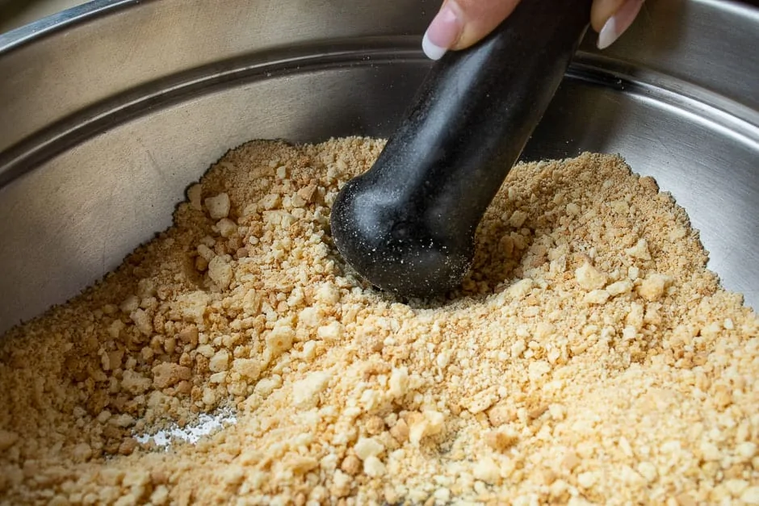

NY cheesecake

Ingredients
Preparation Time 30 Min.
Cook Time 90 Min.
Cake base
- 220 g butter biscuits (finely crumbled)
- 1 pinch Salt (I prefer to use Himalayan salt)
- 75 g butter (melted)
- 1 tsp vanilla flavour (or a packet of vanilla sugar)
Cake filling
- 900 g cream cheese (I like to use Philadelphia)
- 300 g Sugar (I prefer to use brown sugar)
- 30 g starch
- 2 tsp vanilla flavour (I use liquid vanilla flavour)
- 2 pc eggs
- 175 ml Cream
- 1/2 pc Lemon (Organic lemon juice and abrasion)
For caramelizing
- 4 tbs brown sugar
Strawberries
- 100 g fresh strawberries
- 6 tbs Sugar
Instruction
Prepare the cake in a water bath
-
Brush cake pan with butter.
Prepare springform pan
Preheat the oven to 180° C
Grease a springform pan with 28 cm diameter well with butter.
Wrap the springform pan well with aluminium foil and prepare it waterproof for a water bath in the deep oven tray.
Cake base
-

Chop up the biscuits for the cake base.
Crush cookies
Crumble the butter biscuits and mash them finely.
-
Butter when melting in the pot
Melt butter
Heat the butter
-
Mix the biscuit crumbs with the butter. This creates a simple cake base.
Season cookies
Mix the butter and butter biscuit crumbs with a pinch of salt and vanilla flavouring to a dough.
-

Put the butter biscuit crumbs in the buttered cake tin.
Fill dough
Put the cake dough into the buttered tin and press firmly.
-

Wrap and seal cake pan in aluminum foil
Pack mold
Secure two sheets of aluminum foil on a large work surface by folding them together.
Center the cake pan with the dough base pressed firmly.
-
Cake pan with cake base and wrapped in aluminum foil.
Seal cake tin
Place the prepared mould, wrapped in aluminium foil on the underside, ready for filling.
Cream cheese filling
-
Add the eggs to the cake filling.
Cheese filling ingredients
Put the cream cheese, cream, eggs and sugar in a bowl.
-
For the cake filling, put the cream cheese, lemon zest, vanilla sugar and starch in a bowl.
Stir cheese filling
Add the starch, vanilla aroma, lemon juice and lemon grind and mix.
-
Pour the prepared cake filling into the cake pan.
Pour cheese filling
Pour the cream cheese filling into the prepared cake tin.
-
Spread the poured cream cheese filling in the mold.
Spread filling
Smooth the filling evenly.
-
Pour the baking sheet in the oven with the cake pan over the water.
Bake cake
Reduce the oven temperature to 120-140° C
Place the filled cake tin in a high baking tray.
Pour about 1/2 l onto the baking tray.
The cake is protected by the aluminium foil.
Bake the cake in a water bath for a good 90 minutes or let it set.
Take the cake out of the oven after baking and put your cake in a cool place for at least 6 hours.
Prepare the strawberry sauce
-
Put the sugared strawberries in a saucepan before mixing and process into the strawberry sauce.
Prepare strawberry sauce
Finely mash the strawberries with sugar
-
The mixed strawberry sauce in a sieve.
Strawberry sauce strain
Pass the strawberry mash through a fine sieve to make a great strawberry sauce.
Dressing and serving
-
New York cheesecake originally served with strawberries and strawberry sauce
Serve cheesecake
Arrange the cake pieces with fresh strawberries and the strawberry sauce decoratively and serve.
Bon appetit!